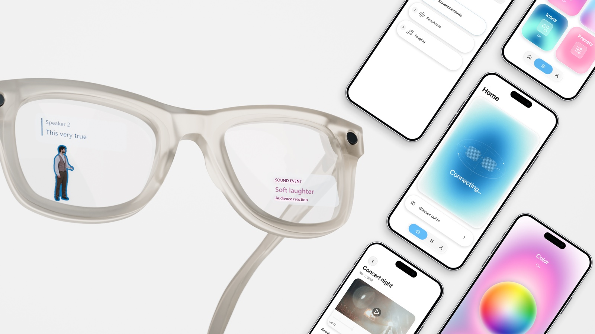
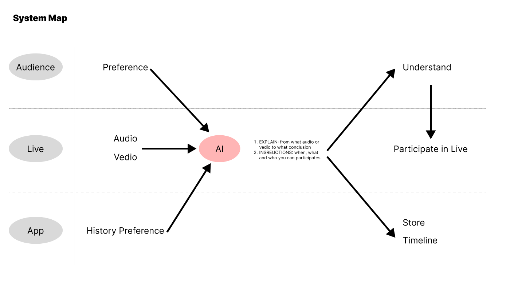
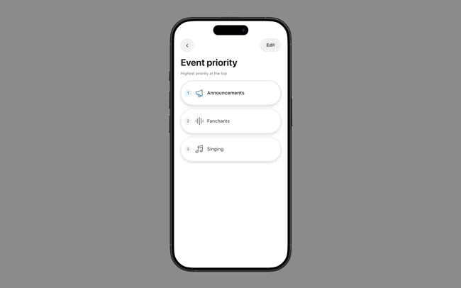
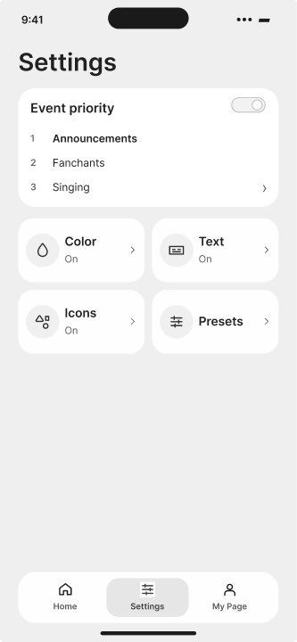
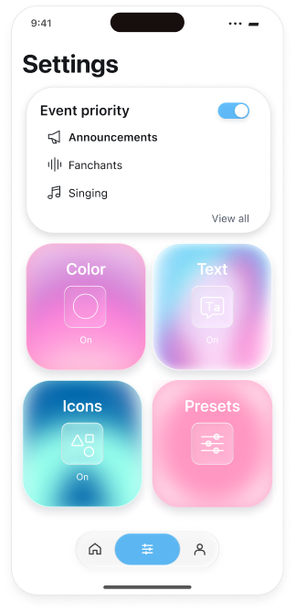

HEIMA
Beyond Hearing
AI-powered AR eyewear for Deaf and hard-of-hearing audiences. See who’s speaking, catch the invitation and join in on your own terms.

Vivian Peng & Zhaolin Hu
2026
Research, AR interaction, companion app, AI system design
A few claps can be over by the time you see the hands around you move. A clip of a sign-language interpreter at a Rihanna performance sparked our interest in concerts. I wanted to understand that same moment at a conference reception, where a speaker changes, a group laughs or someone nearby starts a conversation.
Three kinds of sound, three ways to read the room.
HEIMA uses the lenses to show who is speaking, what a group is doing and where to look when something happens outside the wearer’s view. The wearer can keep watching the event and decide whether to join.

From the crowd to a conversation.
A chant starts behind you.
A fan section starts chanting outside your field of view. A highlight at the edge of the lens points toward it. A short label tells you what you would be turning to see.

Someone speaks to you on the way out.
As the crowd disperses, a fan turns to talk. A highlight connects the speaker to their caption. A tone cue can add context to how the words were said.

A transcript leaves some questions open.
I led the secondary research and reviewed captioning glasses with Vivian. As we compared published DHH experiences and AR sound-alert research with our concert journey, we kept coming back to three different things a wearer might need: timing, location and the exact words of a message.
The crowd starts clapping.
A border catches attention. A label or icon identifies the activity.
Our research notes described border alerts for urgent sounds. We adapted that placement because a short burst of applause also has a narrow window for joining.
A chant starts to the left.
Light the edge nearest the sound.
The wearer can locate an off-screen group with a glance, then decide whether to turn toward it.
The next talk moves to Room 2.
Show the words of the announcement.
Direction alone cannot communicate the new room. The exact message matters here.
Where should a cue appear?
I proposed comparing the concert with a conference reception. In both, someone may be speaking right in front of you while something worth joining starts behind you. We chose to design for those exchanges across venues.
Phone
A phone gives someone space to read and adjust settings. Looking down for a prompt can also mean missing the face of the person talking.
VR headset
A virtual scene could visualize the music. We wanted to keep the actual stage, crowd and people nearby in view.
AR glasses
We chose a lightweight eyewear concept so the wearer could look up throughout the event. The phone became the place to set preferences beforehand.
What we could run in the classroom.
For our Applied AI class, we connected three models to Unity. The classroom demonstration showed individual behaviors, including captions, a sound-event cue, a tone indicator and a sing-along countdown.
Paraformer
Speech → captionsTurns spoken words into readable text.
YAMNet
Sound → eventIdentifies sounds such as applause, laughter and alarms.
emotion2vec
Voice → toneEstimates emotional tone from speech.
The demonstration let us inspect what appeared in view. Whether the cues were legible in a crowded venue, or arrived early enough for someone to participate, remained open when the course ended.
Choose what gets through.
Imagine a cheer behind you just as the venue announces a room change. I designed the priority editor so a wearer could put announcements first before arriving. In our proposed display rule, only the higher-ranked category appears when cues compete.

One card, two actions.
I designed the Text tile around two different intentions. Its center turns text on or off. Opening the tile gives the wearer finer control over size and position. Someone who likes the defaults can leave the phone in their pocket.



A few claps leave very little time.
A useful prompt has to fit both the lens and the moment. A line of text can carry a new room number. Describing the direction of a chant in a sentence would take time to read while the crowd keeps moving. That led us to pair an edge highlight with a short label.
Our Unity prototype left two hardware questions open: how quickly a physical device could present the cue after a sound, and how clearly someone could see it against a changing stage or a bright room. Both need to be measured on wearable hardware.
Did the wearer get a chance to join?
I would return to the first few claps and test with Deaf and hard-of-hearing participants. For someone who wants to join, I would record three moments.
Applause begins.
Record the start of the shared moment.
The border appears.
T₁ − T₀ gives the delay before the prompt.
The wearer joins.
If they choose to clap, T₂ − T₀ measures time to participation.
If someone keeps watching, I would ask what they noticed and what they wanted to do. Choosing to sit out and realizing too late are very different experiences. That distinction is what I would want the next round of testing to capture.